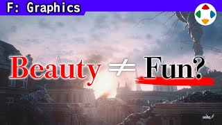
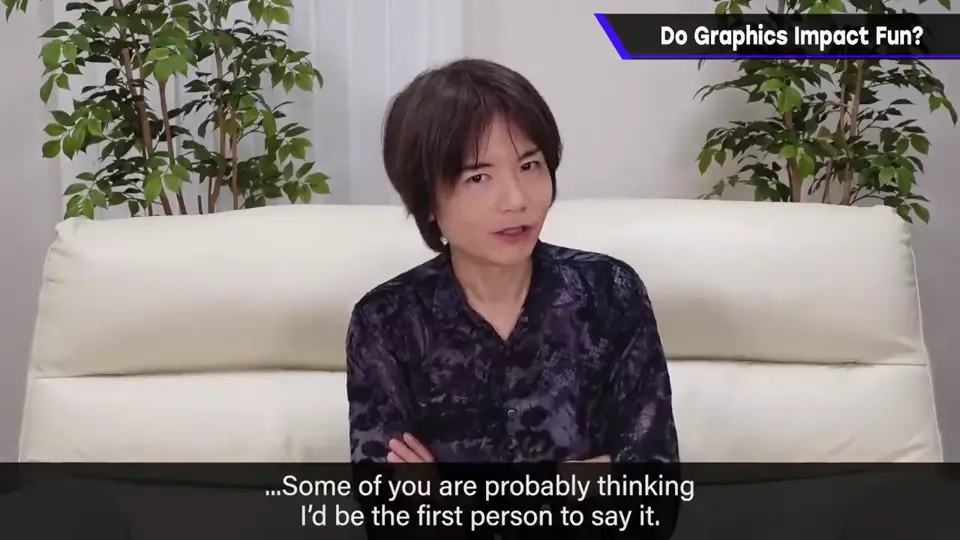
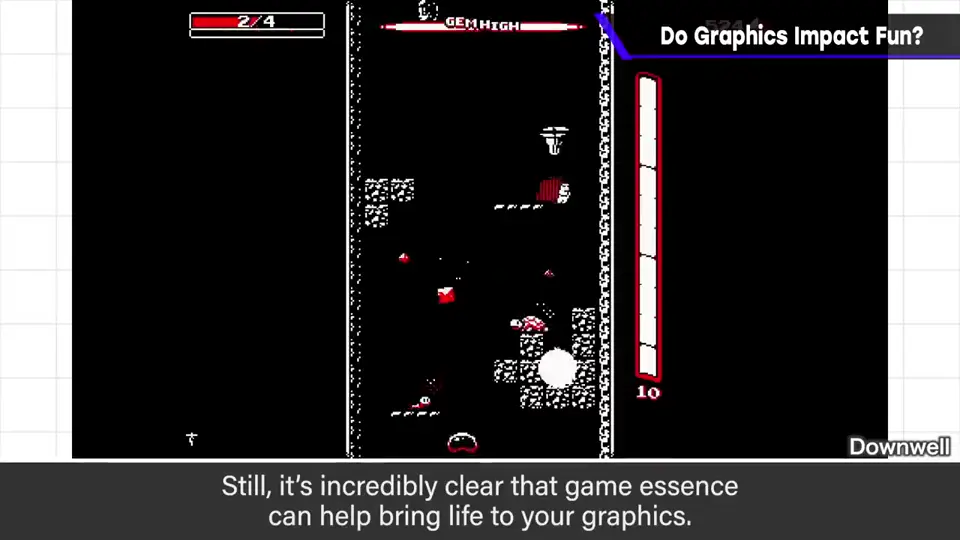
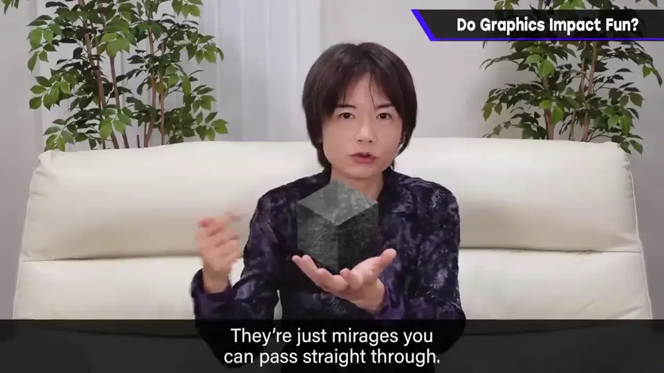
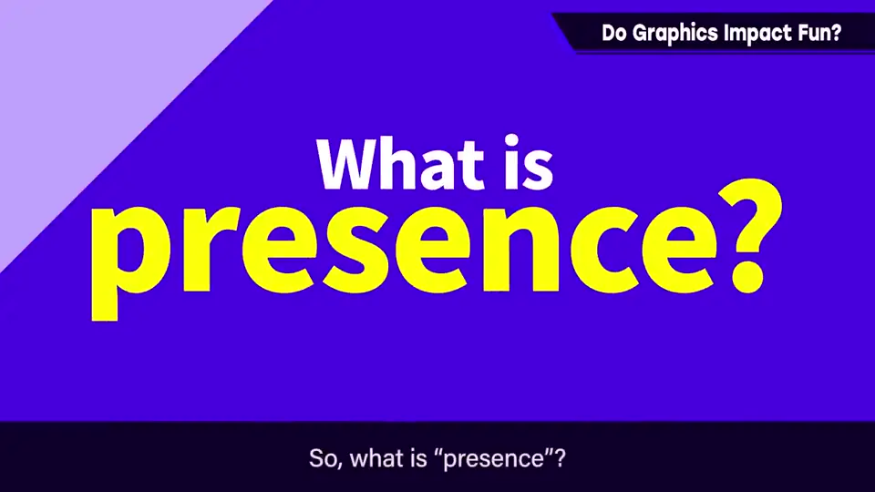
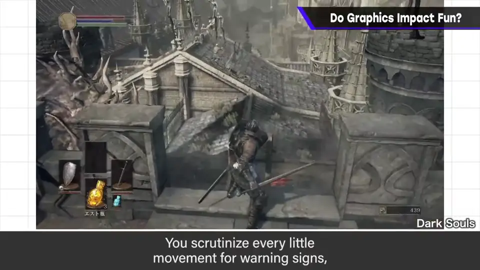
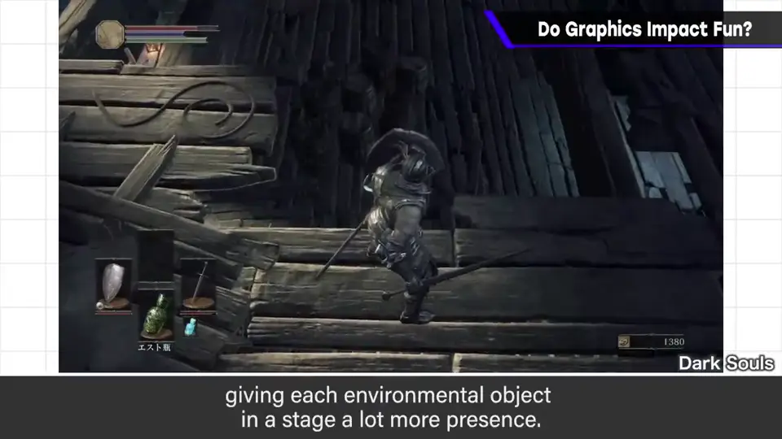
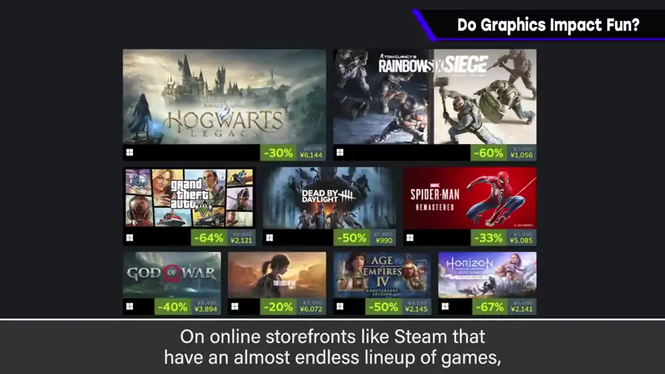

速览
常听到「游戏乐趣与画面漂亮无关」，真的是这样吗？大家可能以为樱井最会说「无关」。确实，游戏性和画面漂亮似乎可以独立考虑；但游戏性衬托画面这件事明显存在。说得直白些，游戏的背景就只是多边形：不放判定就不会碰到，是能嗖地穿过去的布景；不设定连重力都没有，和游戏里感受到的存在感完全不同。那存在感是什么？例如通关过《黑暗之魂》《只狼》的人很多吧：非常容易死，尤其初见时会对周围极度警惕，盯着背景里不经意的动作和预兆，小心翼翼前进。这种状态下会仔细关注舞台的每个地方，一个背景的存在感就更突出。如果同样的画面换成索尼克高速跑过，印象会完全不同。背景是能穿过的布景，它能否更有意义，也受游戏内容影响。当然通常背景和角色会按游戏内容制作，很少错配，但可以意识到游戏乐趣与画面观感会相互影响。换个视角：Steam 等网店里排着无数游戏，玩家根据横幅判断要不要点进去看；画面不吸引人就不会被玩，从这个意义上可以说是和乐趣相乘。图形说到底取决于观者；「乐趣与画面无关」的看法也不算错，但取得综合平衡、把两者都拉高是最好的。
1. 真的无关吗 0:03
常听到「游戏的乐趣与画面漂亮无关」。真的是这样吗？大家可能以为樱井最会说「无关」。


确实，游戏性与画面漂亮似乎可以独立考虑。但游戏性能衬托画面，这一点是明显存在的。
2. 背景只是布景 0:35
故意说得直白些：游戏的背景只是多边形。不放判定就不会碰到，是能嗖地穿过去的布景；不设定的话连重力都没有，和游戏中感受到的存在感完全不同。

3. 什么是存在感 0:56
那存在感是什么？例如通关过《黑暗之魂》《只狼》的人很多吧。这些游戏非常容易死，尤其初见时会对周围极度警惕。



盯着背景里不经意的动作和预兆，小心翼翼地前进。这种状态下会好好关注舞台的每个地方，一个背景的存在感就更加突出。
如果同样的画面，表现成索尼克高速跑过，印象会完全不同。
当然，通常背景和角色是配合游戏内容制作的，很少错配；但可以意识到游戏的乐趣与画面观感会相互影响。
4. 横幅：乘法关系 2:03
换个视角：Steam 等网店里排着无数游戏，玩家根据横幅决定要不要点进去看。

5. 两者都拉高 2:25
图形说到底取决于观者。「乐趣与画面无关」的看法也不算错，但取得综合平衡、把两者都拉到高处是最好的。
自测题
1. 背景的「存在感」由什么影响？
由游戏内容影响——例如在容易死的游戏里会警惕地观察每个角落，背景存在感更突出。 1:00
2. 为什么说画面与乐趣是「乘法」？
网店里玩家看横幅决定是否点进去，画面不吸引人就不会被玩。 2:05
3. 「背景只是布景」是什么意思？
背景是没有判定、没有重力的多边形布景，其存在感取决于游戏内容。 0:40